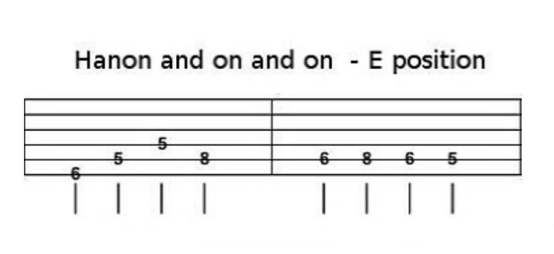

GROWL
I'd rather be playing guitar
FR
 EN
EN
Part of my daily routine on the piano is Hanon exercises. They are great even if sometimes they make my hands ache. In short, they are a series of exercises of repeated ascending, then descending patterns. Each pattern is designed to teach your hands note spacing and to work weak fingers.
Not being one who shakes his scale practice patterns up much on guitar (and that's a bad thing) I decided to adapt one of the patterns. My daily routine put me in the E CAGED position in the key of A# major at time of writing, but the following exercise is useable in E CAGED position for any key. I will follow this article up with other Hanon exercises for different CAGED positions.
HANON AND ON AND ON
So here it is (click for the pdf):
Be sure to play slowly and steadily and to ONLY look at the TAB to work out the pattern and to help you out the first couple of times. If you look at this and play it so that it is memorised, it misses the point. What we are trying to do here is to practice a scale with a fingering and in a note order that we don't usually. That forces us to quickly locate scale tones out of their usual order; an ESSENTIAL skill for improvising.
If you consider adding this to a practice regime, give it less time than arpeggio lessons. Targeting chord tones is more important and that makes arpeggios vital. Play with confidence and think about what notes you are playing and the intervals formed in the pattern. As you are doing this you may notice that low and behold you are practising triad inversions! The first three notes of almost all bars constitute a first inversion triad. Bearing this in mind as you play is a good way to cement those shapes in memory. A feat that in the long term can only help things like jazz comping or chord melody.
EXTENSION
The obvious extension of this exercise is to play it in the other CAGED positions. If you want to make sure that you hit everything and if you are brave you might try applying the pattern to the octave series down the fretboard!